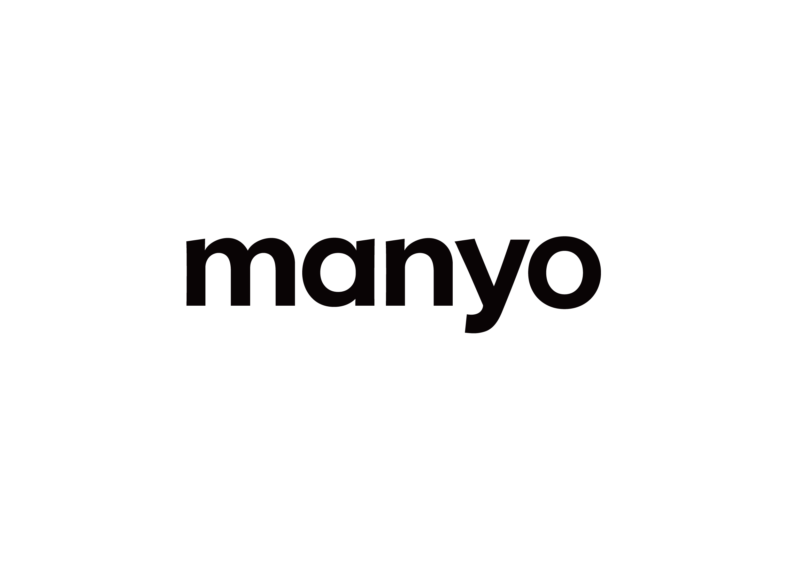

홈 > 브랜드 매거진 > 토리든
토리든
토리든(Torriden)은 저분자 히알루론산 '다이브인' 라인으로 알려진 한국 클린뷰티 스킨케어 브랜드이다.
산업 분야 뷰티·퍼스널케어 · 공개 등급 디렉토리 · 브랜드 평가 3.6 ★
한눈에 보는 브랜드
토리든(Torriden)은 2015년 설립된 주식회사 토리든의 브랜드로, 2019년 출시한 '다이브인 세럼'이 히트하며 성장했다. 2020년 CJ올리브영 클린뷰티 브랜드로 선정됐다.
브랜드 관점
토리든 항목은 단순한 이름 목록이 아니라 뷰티·퍼스널케어 시장 안에서 어떤 역할을 하는지 읽기 위한 기준점입니다. 제품·서비스 범위, 유통 방식, 시각 아이덴티티, 시장 포지션을 함께 비교하면 같은 산업의 다른 브랜드와 차이가 선명해집니다.
브랜드 아이덴티티
안전한 성분을 내세운 수분 중심 클린뷰티 스킨케어 브랜드다.
제품과 서비스
대표 제품과 서비스 정보는 편집 검수 후 공개됩니다.
현재 상태
산업: 뷰티·퍼스널케어
타임라인
정리된 연도형 이벤트가 없습니다.
BI/CI 변천사
확인된 BI/CI 이미지가 아직 없습니다.
함께 읽을 브랜드
 뷰티·퍼스널케어 · 디렉토리올리브영
뷰티·퍼스널케어 · 디렉토리올리브영올리브영은 대한민국의 헬스앤뷰티 리테일 브랜드입니다. 화장품, 스킨케어, 건강식품, 퍼스널케어 상품을 큐레이션하며 K뷰티 유통의 대표 접점으로 자리 잡았습니다.
메디힐는 뷰티·퍼스널케어 브랜드로, 성분, 사용감, 패키지, 이미지 언어가 구매 판단에 직접 연결되는 영역입니다.
클리오는 뷰티·퍼스널케어 브랜드로, 성분, 사용감, 패키지, 이미지 언어가 구매 판단에 직접 연결되는 영역입니다.
 뷰티·퍼스널케어 · 편집 검수니베아
뷰티·퍼스널케어 · 편집 검수니베아니베아(NIVEA)는 1911년 독일 바이어스도르프(Beiersdorf)가 출시한 글로벌 스킨케어 브랜드다. 세계 최초의 안정적인 유중수(油中水) 유화 크림을 선보이...
 뷰티·퍼스널케어 · 편집 검수도브
뷰티·퍼스널케어 · 편집 검수도브도브(Dove)는 유니레버가 1957년 출시한 비누·바디케어 퍼스널케어 브랜드이다.
 뷰티·퍼스널케어 · 자료 기반라운드랩
뷰티·퍼스널케어 · 자료 기반라운드랩라운드랩(ROUND LAB)은 서린컴퍼니가 2017년 선보인 대한민국의 저자극 스킨케어 브랜드다. '1025 독도 토너' 등 순한 기초 라인으로 알려진 클린 뷰티 브...
 뷰티·퍼스널케어 · 매거진 완성러쉬
뷰티·퍼스널케어 · 매거진 완성러쉬러쉬는 영국의 뷰티·퍼스널케어 브랜드로, 성분, 사용감, 패키지, 이미지 언어가 구매 판단에 직접 연결되는 영역입니다.

뷰티·퍼스널케어 · 자료 기반마녀공장마녀공장(Manyo Factory)은 2012년 설립된 한국의 클린뷰티 화장품 브랜드로, 퓨어 클렌징 오일로 유명하다.